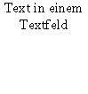

Diese 2 Seiten wurden automatisch mit dem Testtool im Stufe1-Test des Writers erstellt.
Abgesendet von :
Feldbefehle : Seitenanzahl
: Seitennummer
Notizen :
Eine Grafik : am Zeichen verankert eine Animated-Gif an Seite
Eine Zeichnung : ( Gruppiert ) Ein Kontrollfeld:

Der Textrahmen: Erstellung am :
Format - Seite : Linke Seite
Hintergrundbild : den Bären ( baer.gif )